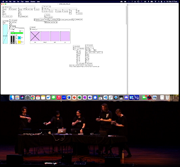
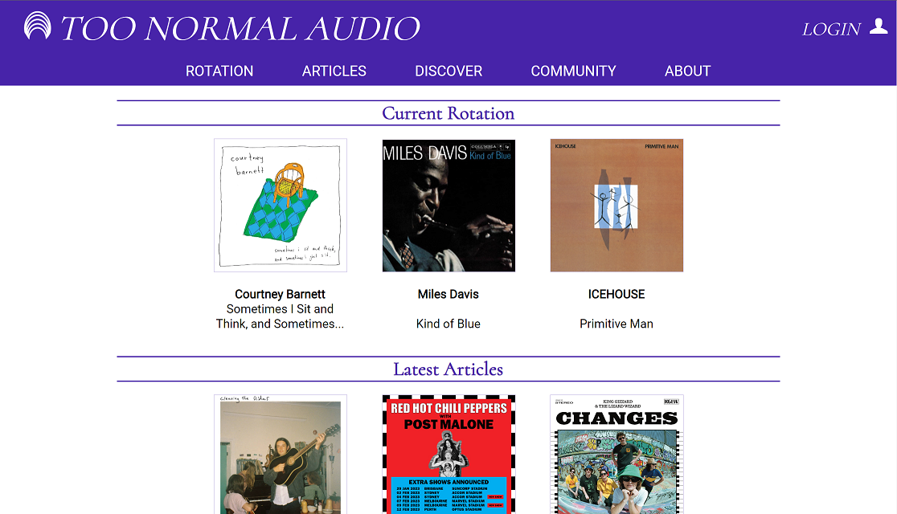

About Me.
I am energetic, eager to learn and ready to create real value for people and organisations.
Currently based in Canberra, Australia, I'm a B.I.T. and B.Comm. student at the Australian National University and work for the Australian Government as a Software Engineer.
Having started my coding journey in high school with basic HTML and JS games based on classic board games like Risk. I learnt that I enjoy the problem-solving-journey of problem discovery, solution generation and execution.
When I'm not studying or working, I'm probably enjoying music (or doing both). Whether that is performing, listening, collecting, or talking on my university radio show!
Projects.
LLMs in Government.
Through COMP3820 at ANU, I completed a proof of concept project for the Department of Employment and Workplace Relations showcasing the use of large language models in interpreting, summarising and explaining complex cyber security policies. It lead to a cost and benefit understanding of AI in government that has effectively informed future planning.
Tech: Cloud, Python, React, IaC
LENS2022.

Developed an electronic instrument using PureData and smart phone motion controls.
Composed and performed a piece of music for a final performance at Llewellyn Hall, ANU.
You can watch the performance here: YouTube
Too Normal Audio.
 I created an online magazine about all things music with HTML, CSS and JS. Using Firebase for authentication, and storing content from the community contribution feature!
Visit here: Too Normal Audio
Some features are temporarily disabled.
Contact Me.
© Thomas Nouri-Azari
Design: HTML5 UP
Telstra Tower image by Pascal Vuylsteker licenced under creative commons.